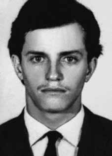

Antônio
Carlos
Bicalho
Lana
CIRCUNSTÂNCIAS DA MORTE
Em investigação realizada por João e Cléa Moraes, foi descoberto que em novembro de 1973, Antônio Carlos Bicalho Lana foi preso no Posto Rodoviário, na avenida Senador Pinheiro Machado (Canal 1), em São Vicente (SP), junto com Sônia Maria de Moraes Angel Jones e, posteriormente, levado à capital.
Sônia e Antônio Carlos tinham recém-alugado um apartamento nessa cidade. O local passou a ser vigiado por agentes dos órgãos de repressão política, que informaram aos funcionários do condomínio que ali moravam “dois terroristas muito perigosos”. Embora a data exata da prisão nunca tenha sido estabelecida, sabe-se que era de manhã quando Antônio Carlos e Sônia pegaram o ônibus da empresa Zefir com destino à cidade de São Paulo. Muitos agentes da repressão já estavam dentro do referido coletivo. Ao mesmo tempo, nas imediações da agência de venda de bilhetes, encontravam-se outros policiais aguardando que os dois descessem para efetuar a compra das passagens, já que estas não eram vendidas dentro do ônibus.
Em sua busca incessante, os pais de Sônia localizaram o bilheteiro do ônibus, Ozéas de Oliveira, e o motorista, Celso Pimenta, que presenciaram a prisão do casal. Segundo essas testemunhas, Antônio Carlos tentou pagar as passagens diretamente ao motorista, mas este lhe informou que o pagamento deveria ser feito no guichê do Canal 1, onde ficava a agência da empresa. Quando lá chegaram, Antônio Carlos desceu do ônibus e Sônia ficou. Cinco agentes já se encontravam dentro da agência e outros chegaram logo após em diversos carros. No guichê, Antônio Carlos lutaria com os policiais. Em seguida, foi dominado a socos e pontapés, levando uma coronhada de fuzil na boca. Ao se levantar, Sônia foi agarrada e, na sequência, levou um pontapé nas costas. Saiu do ônibus algemada pelos pés, sendo colocada em um Opala, enquanto Lana foi empurrado para outro carro.
A versão oficial relatada à época informava que eles teriam morrido em um tiroteio com agentes dos órgãos de segurança no bairro de Santo Amaro, em São Paulo. A comissão de familiares investigou os arquivos do Departamento de Ordem Política e Social (DOPS) de São Paulo e, em 1990, encontrou fotos do corpo de Antônio Carlos, no qual se notavam mutilações provocadas por torturas. As marcas deixadas pelos tiros que Antônio Carlos recebera durante outra emboscada que sofrera junto com outros militantes em 1972 foram fundamentais para a identificação dos seus restos mortais pelo Departamento de Medicina Legal da Universidade Estadual de Campinas (Unicamp), em 1991.
Posteriormente, em entrevista à revista Veja, em 1992, o sargento Marival Chaves, do DOI-CODI/SP, afirmou que Antônio Carlos e Sônia teriam sido presos e levados para um centro clandestino, onde foram mortos com tiros no tórax, cabeça e ouvido, na mesma cidade. Em depoimento na audiência pública organizada pela Comissão Nacional da Verdade (CNV) em 10 de maio de 2013, Marival Chaves confirmou que Antônio Carlos foi levado para um sítio, que funcionou como centro clandestino, onde foi torturado e morto.
Posteriormente, informou que seu corpo, assim como dos demais militantes mortos, foi apresentado como um “troféu” aos agentes do DOI-CODI. O corpo de Antônio Carlos Bicalho Lana foi enterrado, inicialmente, no cemitério Dom Bosco, em Perus. Seus restos mortais foram trasladados para Ouro Preto (MG), para ser sepultado no cemitério da Igreja Nossa Senhora das Mercês.
In an investigation carried out by João and Cléa Moraes, it was discovered that in November 1973, Antônio Carlos Bicalho Lana was arrested at the Bus Station, on Avenida Senador Pinheiro Machado (Canal 1), in São Vicente (SP), together with Sônia Maria de Moraes Angel Jones and, later, taken to the capital.
Sônia and Antônio Carlos had recently rented an apartment in that city. The place began to be monitored by agents from political repression bodies, who informed the condominium employees that “two very dangerous terrorists” lived there. Although the exact date of the arrest has never been established, it is known that it was in the morning when Antônio Carlos and Sônia caught the Zefir bus heading to the city of São Paulo. Many agents of repression were already within the aforementioned collective. At the same time, in the vicinity of the ticket sales office, there were other police officers waiting for the two to get off to purchase tickets, as they were not sold inside the bus.
In their incessant search, Sônia's parents located the bus ticket taker, Ozéas de Oliveira, and the driver, Celso Pimenta, who witnessed the couple's arrest. According to these witnesses, Antônio Carlos tried to pay the tickets directly to the driver, but he informed him that payment should be made at the Canal 1 ticket window, where the company's agency was located. When they arrived there, Antônio Carlos got off the bus and Sônia stayed. Five agents were already inside the agency and others arrived soon after in several cars. At the counter, Antônio Carlos would fight with the police. He was then subdued with punches and kicks, taking a rifle butt to the mouth. When she got up, Sônia was grabbed and then kicked in the back. She left the bus handcuffed by her feet, being placed in an Opala, while Lana was pushed into another car.
The official version reported at the time stated that they had died in a shootout with security agents in the Santo Amaro neighborhood, in São Paulo. The commission of family members investigated the archives of the Department of Political and Social Order (DOPS) in São Paulo and, in 1990, found photos of Antônio Carlos' body, which showed mutilations caused by torture. The marks left by the shots that Antônio Carlos received during another ambush he suffered along with other militants in 1972 were fundamental for the identification of his mortal remains by the Department of Legal Medicine of the State University of Campinas (Unicamp), in 1991.
Later, in an interview with Veja magazine, in 1992, Sergeant Marival Chaves, from DOI-CODI/SP, stated that Antônio Carlos and Sônia had been arrested and taken to a clandestine center, where they were killed with gunshots to the chest, head and ear, in the same city. In testimony at the public hearing organized by the National Truth Commission (CNV) on May 10, 2013, Marival Chaves confirmed that Antônio Carlos was taken to a farm, which functioned as a clandestine center, where he was tortured and killed.
Later, he reported that his body, as well as that of the other dead militants, was presented as a “trophy” to DOI-CODI agents. The body of Antônio Carlos Bicalho Lana was initially buried in the Dom Bosco cemetery, in Perus. His remains were transferred to Ouro Preto (MG), to be buried in the cemetery of the Nossa Senhora das Mercês Church.
En una investigación realizada por João y Cléa Moraes, se descubrió que, en noviembre de 1973, Antônio Carlos Bicalho Lana fue detenido en la Estación de Ómnibus, en la Avenida Senador Pinheiro Machado (Canal 1), en São Vicente (SP), junto con Sônia Maria de Moraes Angel Jones y, posteriormente, trasladado a la capital.
Sônia y Antônio Carlos habían alquilado recientemente un departamento en esa ciudad. El lugar comenzó a ser vigilado por agentes de los órganos de represión política, quienes informaron a los empleados del condominio que allí vivían “dos terroristas muy peligrosos”. Aunque nunca se ha establecido la fecha exacta de la detención, se sabe que fue por la mañana cuando Antônio Carlos y Sônia tomaron el autobús Zefir con destino a la ciudad de São Paulo. Muchos agentes de represión ya se encontraban dentro del citado colectivo. Al mismo tiempo, en las inmediaciones de la taquilla, había otros policías esperando a que los dos bajaran para comprar los billetes, ya que no se vendían en el interior del autobús.
En su incesante búsqueda, los padres de Sônia localizaron al pasajero del autobús, Ozéas de Oliveira, y al conductor, Celso Pimenta, que presenciaron la detención de la pareja. Según estos testigos, Antônio Carlos intentó pagar los billetes directamente al conductor, pero este le informó que el pago debía realizarse en la taquilla del Canal 1, donde estaba ubicada la agencia de la empresa. Cuando llegaron allí, Antônio Carlos bajó del autobús y Sônia se quedó. Cinco agentes ya se encontraban dentro de la agencia y otros llegaron poco después en varios autos. En el mostrador, Antônio Carlos se peleaba con la policía. Luego fue reprimido a puñetazos y patadas, llevándole la culata de un rifle en la boca. Cuando se levantó, agarraron a Sônia y luego le dieron una patada en la espalda. Salió del autobús esposada por los pies y la colocaron en un Opala, mientras que Lana fue empujada a otro automóvil.
La versión oficial divulgada en ese momento afirmaba que habían muerto en un tiroteo con agentes de seguridad en el barrio de Santo Amaro, en São Paulo. La comisión de familiares investigó los archivos del Departamento de Orden Político y Social (DOPS) de São Paulo y, en 1990, encontró fotografías del cuerpo de Antônio Carlos, que mostraban mutilaciones provocadas por torturas. Las marcas dejadas por los disparos que recibió Antônio Carlos durante otra emboscada que sufrió junto a otros militantes en 1972 fueron fundamentales para la identificación de sus restos mortales por parte del Departamento de Medicina Legal de la Universidad Estadual de Campinas (Unicamp), en 1991.
Posteriormente, en una entrevista con la revista Veja, en 1992, el sargento Marival Chaves, del DOI-CODI/SP, afirmó que Antônio Carlos y Sônia habían sido detenidos y trasladados a un centro clandestino, donde fueron asesinados con disparos en el pecho, la cabeza y la oreja, en la misma ciudad. En testimonio en la audiencia pública organizada por la Comisión Nacional de la Verdad (CNV) el 10 de mayo de 2013, Marival Chaves confirmó que Antônio Carlos fue llevado a una finca, que funcionaba como centro clandestino, donde fue torturado y asesinado.
Posteriormente, informó que su cuerpo, así como el de los demás militantes muertos, fue entregado como “trofeo” a agentes del DOI-CODI. El cuerpo de Antônio Carlos Bicalho Lana fue inicialmente enterrado en el cementerio Dom Bosco, en Perus. Sus restos fueron trasladados a Ouro Preto (MG), para ser enterrados en el cementerio de la Iglesia Nossa Senhora das Mercês.